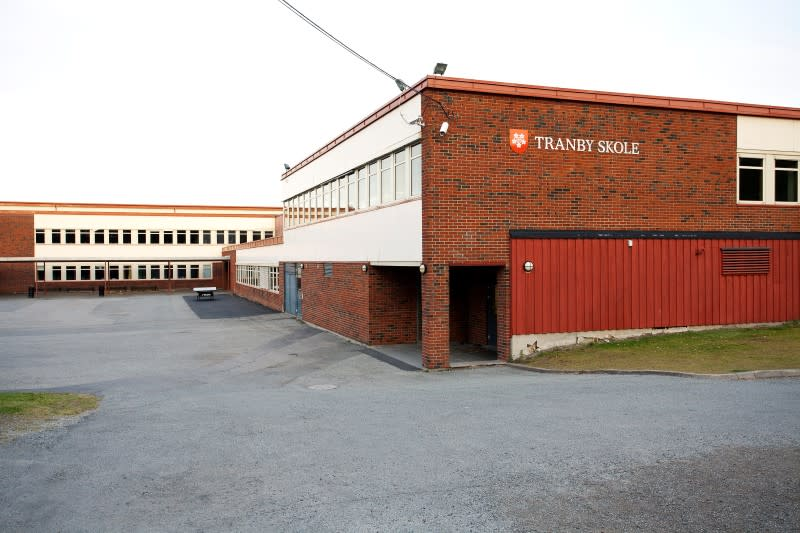
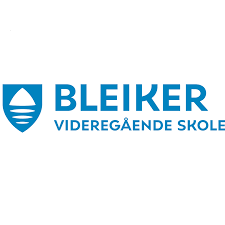

Hjem
Om Meg
Prosjekter
Jeg gikk informasjonsteknologi og medieproduksjon på Åssiden vidergående skole fra 2023 - 2024. Der lærte jeg blant annet å bruke photoshop og design apper og vi kodet litt i python. Vi lagde også noen nettsider som jeg ikke er fornøyd med, men jeg har ivertfall lært litt om det. Vi kodet i html og css når vi lagde nettsidene, så jeg kan ikke mye om javascript.
Jeg gikk på Tranby ungdomskole fra 2020 - 2023. På Tranby så hadde jeg alle vanlige fag sammen med friluftsliv på programfag. Jeg var på arbeidsuke på extra tranby torg våren 2022, og der lærte jeg litt om det å jobbe i matbutikk. Jeg fikk bekreftelsesbrev av butikksjef etter uken var ferdig.

